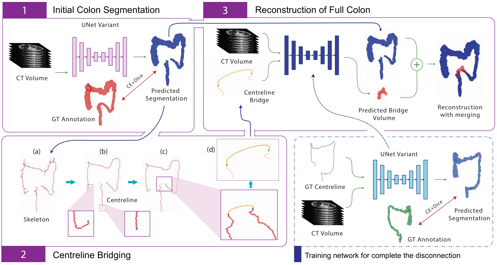
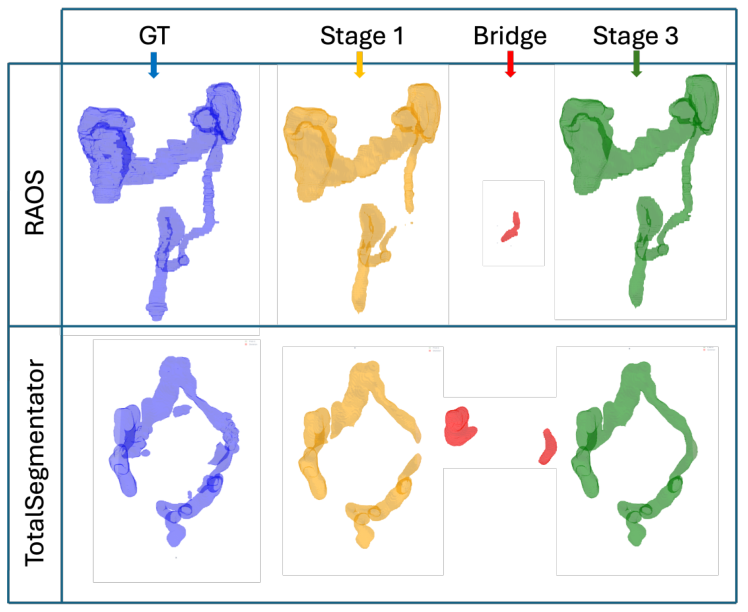

Preserving Anatomical Continuity: Three-Stage Pipeline for Colon Segmentation in 3D Abdominal CT Scans
At a glance
This work investigates a three-stage pipeline for segmenting the colon in 3D abdominal CT, with a focus on preserving anatomical continuity.

Abstract
Accurate colon segmentation from CT images is essential for colorectal disease analysis, yet deep learning based methods often produce disconnected predictions due to complex anatomy. This study introduces a three-stage, topology-preserving segmentation pipeline to address this issue. The first stage performs initial deep learning-based segmentation, followed by centreline bridging to reconnect disjoint regions and a reconstruction stage to refine continuity. Evaluations on TotalSegmentator and RAOS datasets using overlap, distance and topology-based metrics demonstrate improved structural consistency while maintaining segmentation accuracy. The proposed method enhances topological integrity, enabling more reliable colon segmentation for clinical and research applications.
Approach
The first stage uses nnUNet for initial segmentation. The second extracts and prunes a skeleton, identifies disconnected endpoints, and joins them using Bézier curves. A UNet then predicts missing regions from the CT volume and centreline bridges; connected predictions are merged with the initial segmentation.
Results & discussion
Evaluation used 467 TotalSegmentator and 413 RAOS scans with five-fold cross-validation. Initial nnUNet Dice scores were 0.9308 and 0.8847, respectively. Reconstruction improved visual continuity and connectivity ratio, with small decreases in whole-dataset Dice. Restricting reconnection to shorter gaps improved several metrics. Sharp bends and self-connected loops can cause endpoint detection failures.

Citation
@inproceedings{kalupahana2026colon,
author = {Kalupahana, D. and Singh, S. and Ravindran, P. and Sowmya, A.},
title = {Preserving Anatomical Continuity: Three-Stage Pipeline for Colon Segmentation in 3D Abdominal CT Scans},
booktitle = {2026 IEEE 23rd International Symposium on Biomedical Imaging (ISBI)},
publisher = {IEEE},
year = {2026},
doi = {10.1109/ISBI61048.2026.11515927}
}The full abstract, figures, and text summaries are based on the author preprint by Kalupahana et al. (2026). Publication details verified against the UNSW publication record.